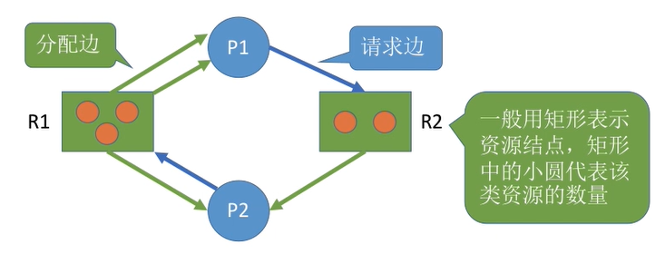
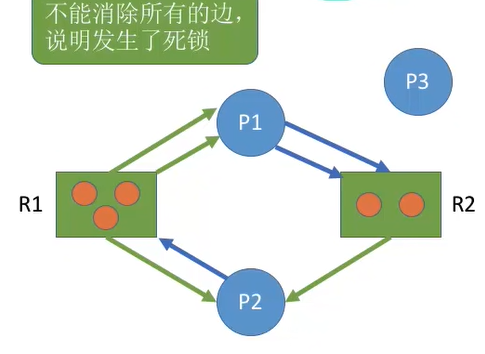

死锁
- 死锁
- 死锁是指多个进程在竞争资源时，因互相等待对方释放资源而造成的一种阻塞现象，导致进程无法向前推进
- 死锁产生的必要条件
- 互斥条件：进程对互斥使用的资源进行争抢，导致死锁
- 不可剥夺条件：进程在获得资源后，其他进程不能强行抢夺，只能由该进程自己释放
- 请求和保持条件：进程在持有资源的同时，请求其他资源，且这些资源被其他进程持有
- 循环等待条件：存在进程资源的循环等待链
- 死锁发生的三种情况
- 对不可剥夺的系统资源竞争时可能引起死锁
- 进程推进顺序非法
- 信号量使用不当
- 死锁的处理策略
- 预防死锁：破坏死锁的四个必要条件中的一个或多个
- 避免死锁：使用某种算法检查防止系统进入不安全状态，如银行家算法
- 检测和解除死锁：允许死锁发生，但操作系统负责检查并解除死锁
死锁的处理
不允许死锁发生
- 静态策略：预防死锁
- 破坏死锁的四个必要条件中的某一个
- 破坏互斥条件： SPOOLing技术：将独占设备逻辑上改造为共享设备
- 适用的范围不广
- 破坏不剥夺条件：
- 进程暂时得不到资源时，必须立即释放所有资源
- 操作系统协助强行剥夺资源，适用于优先级高的进程
- 实现复杂、可能导致进程工作失效、增加系统开销、可能导致进程饥饿
- 破坏请求和保持条件
- 进程在运行前一次性申请完所需全部资源
- 可能导致资源浪费、系统资源利用率低、可能导致进程饥饿
- 破坏循环等待条件
- 顺序资源分配法：给资源编号，进程按编号递增顺序申请资源
- 只有拥有小编号资源的进程才能申请大编号资源
- 优点：避免循环等待链、系统资源利用率高，缺点：系统资源编号不便、可能导致资源浪费、用户编程麻烦
动态策略：避免死锁
- 安全序列与不安全状态
- 安全序列定义：系统按照安全序列的顺序依次给各个进程分配资源，进程可以顺利完成并归还资源
- 不安全状态定义：系统找不到任何安全序列，可能发生死锁（不一定发生死锁）
银行家算法
- 预先判断资源分配是否会导致系统进入不安全状态，避免死锁
struct SourceItems { int sorces[N] = {a_1, a_2, a_3 ... a_N} // 有 N 个资源， 每个资源有 a_i 个 }; struct Process { SourceItems maxNeed; // 最大需求 SourceItems ownedSources; // 已拥有的资源 SourceItems stillNeed; // 还需要多少资源 } processes[M]; // 有 M 个资源 bool checkIfSave(SourcesItems OShaves) { // 传入系统还有多少资源 ...... // 更新 stillNeed (stillNeed 中的每一项是 maxNeed - owendSources) bool tem[M] = {false} // 用来记录是否能满足这个进程 while( true ) { bool ifAddSources = false; // 判断本轮循环中中是否有进程被满足 for(int i = 0 ; i < M ; i ++) { if(tem[i] == ture) continue; if(processes[i].stillNeed <= OShaves) {// 如果当前系统存在的资源能完全满足这个进程， 把这个进程加入安全序列 ifAddSources = true; tem[i] = ture OShaves += processes[i].ownedSources; // 假设这个进程已拥有的资源被释放， 检查是否能将新的进程纳入安全序列 } } if(ifAddSources == false) { bool all = true; // 判断是不是所有的进程都加入安全序列中了 for(int i = 0 ; i < M ; i ++) all &= tem[i]; return all; } } }
- 安全序列与不安全状态
- 静态策略：预防死锁
- 允许死锁：死锁的检测和解除
- 死锁的检测
- 使用资源分配图记录系统资源情况，包括进程节点和资源节点， 通过算法检测系统是否进入死锁状态
- 资源分配图
- 
- 如果系统中剩余的可用资源数满足进程的要求， 那么这个进程是不会被阻塞的，可用顺利完成， 这个进程执行完成后吧资源还给操作系统， 这时会激活等待的进程
- 进程运行完成，那么会消除连接的资源边，如果不断有进程完成，最后能消除所有的边， 那么就叫这个图可以被简化，也就一定没发生死锁
- 如果不能发生简化， 那么就发生了死锁
- 
- 死锁的消除
- 资源剥夺法：挂起死锁进程并抢占其资源
- 撤销进程法：强制撤销死锁进程并剥夺其资源
- 进程回退法：让死锁进程回退到避免死锁的状态
- 选择牺牲进程的标准：优先级、执行时间、剩余时间、使用资源、批处理式进程优先
- 死锁的检测